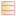

UML, XMI, and OWL
UML is the Unified Modelling Language, XMI is XML Metadata Interchange language and OWL is Web Ontology Language.
CIMTool translates XMI to OWL by first extracting UML information, then creating analogous OWL definitions. This works because we are only concerned with the class diagrams in UML and then only with their structure, not their visual layout.
The analogy between UML and OWL is close, especially in the fundamental concepts of classes and associations (properties in OWL).
UML is normally read as describing a program or software. But in the CIM community the class diagrams are used as a kind of enhanced entity-relationship notation. In other words, CIM UML is defining a data model not a program. This is something that translates very well to OWL.
In programming, a class is a sort of template for a family of objects. In data modelling, and in OWL, a class is generally treated as a mathematical set. The set is called the class extension, its members instances. The class also has an intention, or purpose.
How CIMTool Reads XMI
With great difficulty! The reason is best summed up in this quote from the UML Forum FAQ:
While the XML (XML Metadata Interchange) standard purports to facilitate the interchange of UML models, it has been largely ineffective in practice.There are at least two technical reasons for this. First and foremost, XMI attempts to solve a technical problem far more difficult than exchanging UML models; it attempts to provide a mechanism for facilitating the exchange of any language defined by the OMG's Metamodel Object Facility. Secondly, the UML 2.x Diagram Interchange specification lacks sufficient detail to facilitate reliable interchange of UML 2.x notations between modeling tools. Since UML is a visual modeling language, this shortcoming is a showstopper for many modelers who don't want to redraw their diagrams....
The CIMTool strategy is to glean UML from the XMI. An XML parser recognises constructs of interest while ignoring surrounding syntax. The parser has been expanded over time to recognise more and more constructs that appear in different XMI dialects.
When a construct is recognised, corresponding statements are inserted into an OWL/RDF model. The XMI id's (rather than the human readable, modelling names) are used to link up scraps of UML gleaned from different parts of the XMI document.
A translation phase then renames each XMI id for the modelling name and assigns a namespace. In other words, the URI reference is constructed for each class and property.
Finally, stereotypes are analysed and the OWL rendering of the definitions is adjusted as necessary. Some of these stereotypes have conventional meanings in the CIM community. For example, an enumeration stereotype causes the attributes of a UML class to be re-interpreted as enumeration values.
UML to OWL Translation
In summary, UML concepts are translated to OWL as follows:
- A UML class translates as an OWL Class.
- A UML association translates as two ObjectProperty's in OWL, each the inverse of another. In other words, an association end or role translates as a single an ObjectProperty.
- A UML enumeration translates to either an OWL Class plus individuals or and OWL Class enumerated by a oneOf definition. The former creates an open set that can be extended. The latter a closed set.
- A UML Stereotype translates an instance of OWL class uml:Stereotype. Stereotypes are assigned to classes and properties with an OWL AnnotationProperty, uml:hasStereotype. The uml: namespace here is not part of any standard. It has the URI: http://langdale.com.au/2005/UML#
- A UML Tag translates to a similarly named OWL AnnotationProperty in the uml: namespace.
CIMTool Iconography
CIMTool presents the OWL model with UML-like icons.
| Icon | UML | OWL | Note |
|---|---|---|---|
|  | Class | Class | In UML a class is a definition for a family of objects. In OWL, it is a set of resources |
| Specializes | subClassOf | READ: rhs is a subclass of lhs | |
| Generalizes | inverse subClassOf | READ: rhs is a superclass of lhs | |
| Association | ObjectProperty | An unrestricted property. | |
| Unidirectional Association | FunctionalProperty | A single-valued property. | |
| Unidirectional Association (reversed) | InverseFunctionalProperty | A property whose inverse is single-valued. | |
| Aggregation | ObjectProperty with annotation | A custom annotation property uml:hasStereotype with value uml:aggregateOf is attached to the property definition. | |
| Composition | ObjectProperty with annotation | As above, but the annotation value is uml:compositeOf. |
Note
The association symbols towards the bottom of the table take precedence when more than one applies.
Sometimes the analogy between UML and OWL is strained. A unidirectional association in UML is not necessarily single-valued, but we have used the unidirectional symbol for OWL functional properties. The symbol somehow seems appropriate.
There is nothing in OWL corresponding to the UML concepts of aggregation and composition. These concepts are somewhat qualitatively defined in UML references. See, for example, the Wikipedia entry describing aggregation and composition. We choose to represent these qualities in OWL with the custom annotations described above.